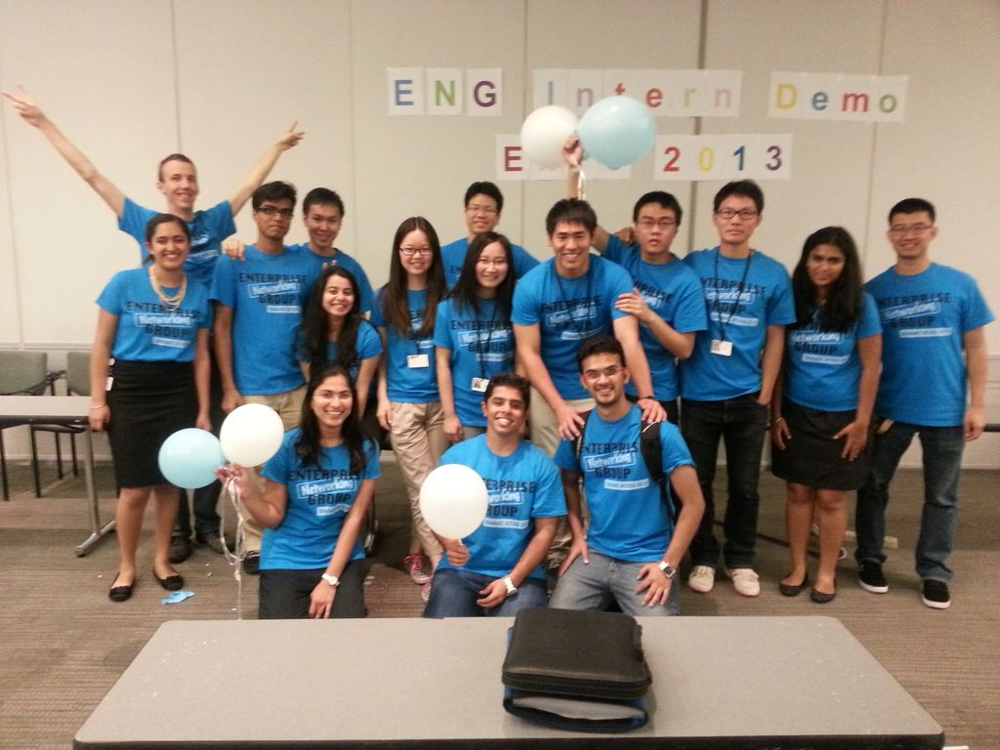

Software Engineering Intern at Cisco Systems, Inc. I interned at Cisco Systems from June 2013 to September 2013. During my internship I built and designed an iOS application as well as worked with web and server applications.
My Internship Experience: When I sit here thinking about my experience at Cisco the summer of 2013 I can not help but smile. Not only was this one of the most educational experiences of my life, it was also incredibly fun and memorable. This being my first internship, I had some serious concerns and questions going into it. Will I be able to fit in the culture? Will my project be fun or just busy work? How will I, "a newbee", relate to experienced individuals in my field? To address similar concerns that future interns at Cisco may have, I have decided to share my experiences from this summer! To start off I would like to talk about the Cisco culture, and more specifically my team's culture! The Wireless Networking Group was the pioneer in implementing what is known as the "open space" culture. It is often easy to become isolated in large corporations. In my opinion, open space introduces the future of highly efficient and collaborative tech teams. The "startup-esque" atmosphere is built with clusters of connecting desks (no cubes!) where all members of the team sit. And yes by all, I mean ALL! Everyone from new college grad hires, to the VP of the department! This was definitely not what I expected. As a matter of fact, I had always imagined myself having my own cube that I could decorate with pictures and small memorabilia. But my initial disappointment was quickly turned to a fortuitous blessing. I discovered the benefits of open space. First, it helps dismantle the stereotypes, given to my people (Software Engineers), of being antisocial, introverted, and isolated from the rest of humanity. Open space literally knocks down the walls and promotes free interaction! Second, this was a great experience of working with an unconventional and highly productive work culture. And above all - it was fun! Interns were given our own section of open space, allowing us to bond and strengthen our own mini community within Cisco's larger one. Along with an innovative culture, Cisco provided great opportunities for learning and getting hands-on industry experience for programming, networking, and professionalism for its interns. Only meaningful projects with, opportunities for growth and education were given to interns. I felt incredibly lucky to work on an awesome project involving many of my favorite areas of computer science - mobile development, web servers, and robotics (OMG how many interns get to say that!)  Last, but not least - the people! As an intern with no prior experience in the industry I was unsure of whether I would be able to relate to longtime employees. But boy was I glad to see how unbelievably helpful and patient my team members were. Always willing to help me through TOI (transfer-of-information) and by giving me pertinent professional advice! One of these individuals included my amazing mentor. Not only did she help me get assimilated to the work culture, but also by taking a personal interest in my growth and helping me every step of the way. She was always just an email - or in Cisco "a jabber message" - away to answer any questions (both technical and cultural.) But most of all I do not think my experience would be the same without the encouragement she provided.
Project Work: > Built and designed an iPhone application to increase efficiency of location services testing > Increased performance and efficiency of wireless site surveys through robotic programming > Integrated mobile application to existing server application integral to business unit > Updated and added features to Android application to enhance performance